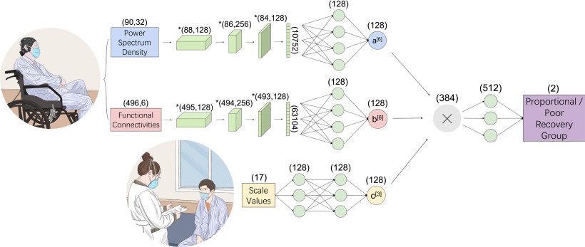

Ping-Ju Lin
Ph.D. Candidate
Tsinghua University Lab
A1043, Lee Shau Kee Science and Technology Building, Tsinghua University
100084 Beijing, China
A1043, Lee Shau Kee Science and Technology Building, Tsinghua University
100084 Beijing, China
Biography
I am a Mechanical Engineering PhD Candidate at Tsinghua University. I work in Division of Intelligent and Bio-mimetic Machinery, State Key Laboratory of Tribology of Linhong Ji, Prof (Tsinghua University).
Currently, I am a visiting scholar at Harvard Medical School and Mass General Hospital. I am working in Laboratory for Translational Neurorecovery of David Lin, MD (Mass General Hospital/Harvard Medical School). I specializes in Intelligent and Bio-mimetic Machinery.
My research interests are in using deep learning techniques involved in neurorecovery. I am also interested in understanding the relationship between neural activity and motor recovery in individuals after stroke.
Google Scholar pages
Publications

PJ, Lin.,
X, Zhai.,
W, Li.
T, Li.
D, Cheng.
C, Li.
Y, Pan.
L, Ji.
A transferable deep learning prognosis model for predicting stroke patients' recovery in different rehabilitation trainings
A transferable deep learning prognosis model for predicting stroke patients' recovery in different rehabilitation trainings
In
IEEE Journal of Biomedical and Health Informatics,,
2022.
Since the underlying mechanisms of neurorehabilitation are not fully understood, the prognosis of stroke recovery faces significant difficulties. Recovery outcomes can vary when undergoing different treatments; however, few models have been developed to predict patient outcomes toward multiple treatments. In this study, we aimed to investigate the potential of predicting a treatment's outcome using a deep learning prognosis model developed for another treatment. A total of 15 stroke survivors were recruited in this study, and their clinical and physiological data were measured before and after the treatment (clinical measurement, biomechanical measurement, and electroencephalography (EEG) measurement). Multiple biomarkers and clinical scale scores of patients who had completed manual stretching rehabilitation training were analyzed. Data were used to train deep learning prognosis models, yielding an 87 …
PJ, Lin.,
T, Jia.,
C, Li.
T, Li.
C, Qian.
Z, Li.
Y, Pan.
L, Ji.
CNN-Based Prognosis of BCI Rehabilitation Using EEG From First Session BCI Training
CNN-Based Prognosis of BCI Rehabilitation Using EEG From First Session BCI Training
In
IEEE Transactions on Neural Systems and Rehabilitation Engineering,
2021.
Stroke is a world-leading disease for causing disability. Brain-computer interaction (BCI) training has been proved to be a promising method in facilitating motor recovery. However, due to differences in each patient’s neural-clinical profile, the potential of recovery for different patients can vary significantly by conducting BCI training, which remains a major problem in clinical rehabilitation practice. To address this issue, the objective of this study is to prognosticate the outcome of BCI training using motor state electroencephalographic (EEG) collected during the first session of BCI tasks, with the aim of prescribing BCI training accordingly. A Convolution Neural Network (CNN) based prognosis model was developed to predict the outcome of 11 stroke patients’ recovery following a 2-week rehabilitation training with BCI. In our study, functional connectivity and power spectrum have been evaluated and applied as the …
C, Qian.,
W, Li.,
T, Jia.
C, Li.
PJ, Lin.
Y, Yang.
L, Ji.
Quantitative assessment of motor function by an end-effector upper limb rehabilitation robot based on admittance control
Quantitative assessment of motor function by an end-effector upper limb rehabilitation robot based on admittance control
In
Applied Sciences,
2021.
Various rehabilitation robots have been developed to assist the movement training of the upper limbs of stroke patients, among which some have been used to evaluate the motor recovery. However, how to understand the recovery of motor function from the quantitative assessment following robot-assisted rehabilitation training is still not clear. The objective of this study is to propose a quantitative assessment method of motor function based on the force and trajectory characteristics during robotic training to reflect motor functional recovery. To assist stroke patients who are not able to move voluntarily, an assistive training mode was developed for the robot-assisted rehabilitation system based on admittance control. Then, to validate the relationship between characteristic information and functional recovery, a clinical experiment was conducted, in which nine stroke patients and nine healthy subjects were recruited …
Cite A transferable deep learning prognosis model for predicting stroke patients' recovery in different rehabilitation trainings
@article{article,
author = {Ping-Ju, Lin and Xiaoxue, Zhai and Wei, Li and Tianyi, Li and Dandan, Cheng and Chong, Li and Yu, Pan and Linhong, Ji},
year = {2022},
month = {12},
pages = {6003-6011},
title = {A transferable deep learning prognosis model for predicting stroke patients' recovery in different rehabilitation trainings},
volume = {26},
journal = {IEEE Journal of Biomedical and Health Informatics,},
doi = {10.1109/JBHI.2022.3205436.}
}Cite CNN-Based Prognosis of BCI Rehabilitation Using EEG From First Session BCI Training
@article{article,
author = {Ping-Ju, Lin and Tianyu, Jia and Chong, Li and Tianyi, Li and Chao, Qian and Zhibin, L and Yu, Pan and Linhong, Ji},
year = {2021},
month = {09},
pages = {1936-1943},
title = {CNN-Based Prognosis of BCI Rehabilitation Using EEG From First Session BCI Training},
volume = {29},
journal = {IEEE Transactions on Neural Systems and Rehabilitation Engineering},
doi = {10.1109/TNSRE.2021.3112167}
}Cite Quantitative assessment of motor function by an end-effector upper limb rehabilitation robot based on admittance control
@article{article,
author = {Chao, Qian and Wei, Li and Tianyu, Jia and Chong, Li and Ping-Ju, Lin and Yiyong, Yang and Linhong, Ji},
year = {2021},
month = {07},
pages = {6854},
title = {Quantitative assessment of motor function by an end-effector upper limb rehabilitation robot based on admittance control},
volume = {11},
journal = {Applied Sciences},
doi = {10.3390/app11156854}
}